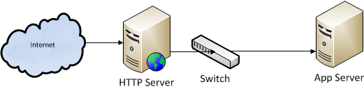
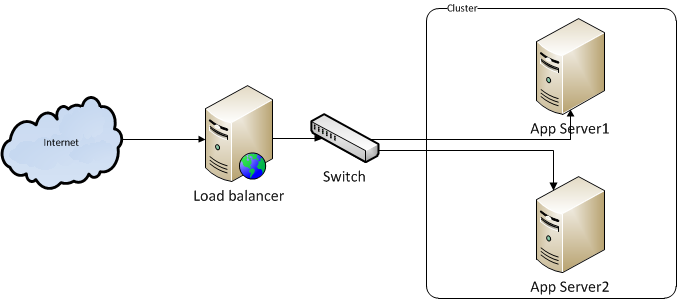

Introduction
World Wide Web (WWW) is a very hot channel for any business. The present trend is getting business on web presence. Getting a business on web presence is very simple - create an awesome customer face web application and deploy it on server.
Just image by spending some time and effort you build an awesome website which is very user friendly, simple to use and everyone likes it. People have started talking about your site in blogs, magazines and started sharing to their friends through social media and other channels. Now, your website is popular and your business started growing.
Your business is growing because you have a web presence as you followed the trend. To make your business web presence you need some infrastructure to support your web application. Let's assume, initially you deployed your website on below architecture.

An HTTP server is a web server which will take the HTTP request and pass it to App server. App Server is an application server which contains your application.
Let's start the discussion with some example. Assume the app server can take maximum 500 TPS (Transactions Per Second). That means your application can process 500 requests in a second.
Note - TPS depends on various parameters like server physical configuration (Memory, Processor, Network and etc.) and application architecture.
As we assumed earlier, your business is growing in internet and number of users are increasing. That means the load on your server is increasing. At some point of time 500 TPS is not sufficient to serve all user requests. you need to look back on server configuration and need to scale your server configuration (vertical scaling). Even if you increase the server configuration, if the load on the server is keep on increasing again at some point of time your single server is not sufficient to serve all the request. In this case we need to add another server.
Irrespective of assumption there are various reasons to have more than one server with application deployed in each. Below are the main reasons.
- As we discussed above, we need to add more servers to handle more requests
- Let's assume your server is managing all the request on time and there is not much load on the server. Due to technical reasons or hardware failure your server went down. Until you make server up you can't do business over the internet. In this case you need a backup server (also called failover server).
Overall, we should have more than one server to do business online. As we discussed, the HTTP server is the one who interacts with application server based on the request. Now we need to answer on below questions.
- How the HTTP server knows how many app servers are there with application deployed or how to configure multiple application servers in HTTP server?
- What base HTTP server will route the request to application servers?
- How to configure failover servers?
Well, we will get the answers to all above questions by the end of this article.
What is Load balancing?
Load balancing is a technique used to distribute the application requests across the servers. Load balancer uses different kind of algorithms to route the request.
Till now we are taking about load balancing on web application. Load balancing is not limited to web application. We can use this concept in multiple places. For example,
- DNS load balancing
- HTTP load balancing
- SSL load balancing
- Network load balancing
- Database load balancing
- Cloud load balancing
This article is aimed to discuss on web application load balancing. See below diagram to understand the load balancing.

In above diagram I replaced the web server name with Load balancer. See Type of Load balancer section to know why the server name is changed to load balancer. Cluster mean a group of servers . App Server1 and App Server2 are the application servers which they are in one group or cluster to serve for the same purpose.
What does load balancer do
Route the request - Load balancer works as a reverse proxy to distribute the application traffic across the servers based on the chosen algorithm.
Health check - Gets the health statistics of each server. This check is done based on the time frame. If the server is down due various reasons, the load balancer will not send the request to that server. Once the server is up again requests will be routed.
Session stickiness - Maintains the session stickiness. The load balancer will keep track of the previous requests. For example, if user U1 is severed through server A, all the U1 user requests will be served from server A. Session stickiness is optional. You can enable or disable this based on need. The load balancer will maintains the session stickiness using the client IP address, cookies or URL. Session stickiness may disturb the load balancing algorithm.
Failover servers - We can maintain the list reserved servers or backup servers. The load balancer will maintains the list of backup servers and route the requests to backup servers if none of the primary servers are available to serve the request.
Types of Load balancers
Load balancer can be a physical device or a software. Based on need you need to choose the one. You can google to know about load balancer devices. F5 BIG-IP load balancer is widely used. F5 supports load balance over multiple data centers.
Software based load balancers will work along with HTTP servers. Based on popularity below are the list of HTTP servers.
| HTTP Server | Comapany Name |
| Apache | Apache |
| IIS | Microsoft |
| Nginx | NGINX, Inc. |
| GWS |
Netcraft will conduct the surveys every month to understand the popularity of the web server. Visit their site to know the trend.
So, we have device based as well as software based load balancers. Now the confusion is which one to choose. It's completely based on the business requirement. There is an article published by Nginx which explains why to choose software based load balancer.
How to choose the right web server
Once you decide to go with load balancer making right choice to choose the one which are available in the market is the most challenging question. Here I am trying to give some guidance to understand the parameter that need to be considered to make your choice.
- OS compatibility, Security and feature supported
-
Measure Web server performance
There are open source tool in market to measure the web server performance. For example, Httperf and Apache Bench (ab) and Jmeter tools can be used to measure the bench mark. Before measure, disable all the plug-ins. As per survey Nginx server is a bit faster than Apache.
-
Algorithm or method supported
Like OS uses process scheduling algorithms, load balancing also uses some algorithms or methods to balance the load in a group/cluster. Based on need we can specify the algorithm that need be used by load balancer. There are lot of algorithms to balance the load. Most commonly used algorithms are,
Methods/Algorithm Description When to Choose Round robin This is the default method used in most of loan balancers. Round robin method distributes the load across all servers equally Suitable if the servers are with the same capabilities in the cluster Weighted round robin This method works like as a round robin, but considered the server weight given to it. For example, server A weight is defined as 100 and Server B weight with 50. That means out of 3 requests, 2 requests are served by server A and 1 request by server B Suitable if the servers are with different capabilities in cluster Least connections Least connections method is very simple. The load balancer will route the request to the server which has least active connections Suitable if servers are with same or different capabilities. It's based on server performance Apart from the above methods, we can create a rule in load balancer based on HTTP headers, cookies and request data.
Web servers and load balancing methods
Web server Algorithms Supported Apache Round robin
Weighted round robin
Least connectionsIIS Weighted round robin
Weighted total traffic
Least current request
Least response time
Server variable hash
Query string hash
Request hashNginx Round robin
Weighted round robin
Least connections
IP-Hash
| Server | Security | Features | OS | |||||||||||||
| Basic | digest | secure | Virtual Hosting | CGI | Admin console | IPV6 | HTTP/2 | Windows | Linux | OS X | Solaris | OpenVMS | Z/OS | HP UX | IBM i | |
| Apache | Y | Y | Y | Y | Y | Y | Y | Y | Y | Y | Y | Y | Y | Y | Y | Y |
| IIS | Y | Y | Y | Y | Y | Y | Y | Y | Y | N | N | N | N | N | N | N |
| Nginx | Y | Y | Y | Y | N | Y | Y | Y | Y | Y | Y | Y | N | N | Y | N |
References
http://en.wikipedia.org/wiki/Comparison_of_web_server_software
http://nginx.org/en/docs/http/ngx_http_upstream_module.html
http://nginx.com/resources/admin-guide/load-balancer
http://en.wikipedia.org/wiki/Comparison_of_web_server_software